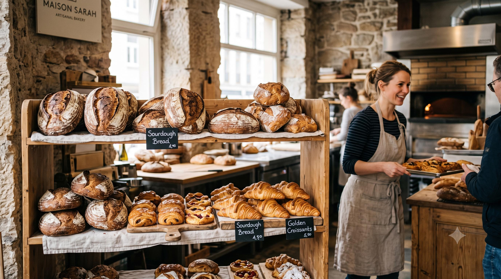

Maison Sarah
Handmade bread and pastries, baked every morning by Sarah and her team.

Find Us
Maison Sarah Bakery123 Artisan Street
Paris, France
Locate us on OpenStreetMap.
Handmade bread and pastries, baked every morning by Sarah and her team.

Locate us on OpenStreetMap.